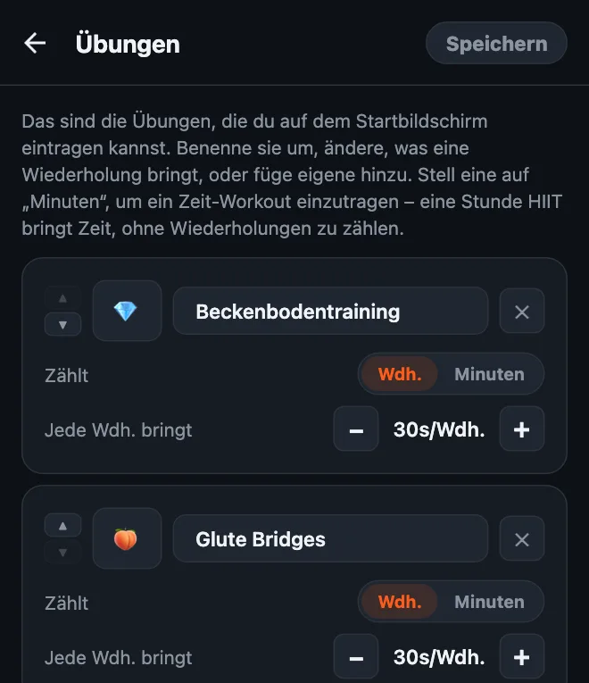
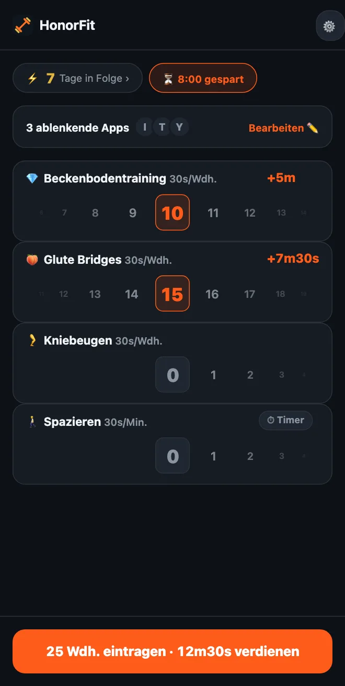

Mit Kegel-Übungen das Handy entsperren
Hallo zusammen! Ich habe HonorFit gebaut, weil ich Liegestütze zwischen mir und Instagram haben wollte, ohne mein Handy irgendwo aufzustellen, damit eine Kamera mitzählt (das an einer Tankstelle zu machen war nicht gerade mein glanzvollster Moment, haha). Kein Konto, keine Kamera: Du machst die Wiederholungen, trägst sie selbst ein, und deine Apps werden entsperrt.
Liegestütze sind aber nicht jedermanns Sache. Und eine der Übungen, die am besten zu dieser Idee passen, sind gar keine Liegestütze, sondern Kegel-Übungen und Beckenheben. Hier erkläre ich, warum, und wie du das einrichtest.
Warum Kegel-Übungen so gut zum Ehrensystem passen
Eine Kegel-Übung sieht niemand. Nicht die Person neben dir im Bus, nicht deine Kolleginnen und Kollegen und schon gar keine Handykamera. Eine App, die Wiederholungen per Kamera zählt, kann die schlicht nicht zählen.
HonorFit versucht es gar nicht erst. Es läuft nach dem Ehrensystem: Du machst sie, drehst das Rad auf die Anzahl, die du geschafft hast, fertig. Du kannst dir deine TikTok-Zeit also im Meeting, in der Schlange im Supermarkt oder auf dem Sofa verdienen, und keiner kriegt was mit.
Und es löst das, was alle über Kegel-Übungen sagen: „Ich weiß, ich sollte sie machen, ich vergesse es nur immer.“ Wenn du zigmal am Tag zum Handy greifst (keine Wertung, ich auch), wird jedes Mal davon zur Erinnerung.
Beckenheben ist zwar nicht unsichtbar, geht aber ganz leicht auf dem Boden oder sogar im Bett, braucht kein Equipment und passt richtig gut zu Kegel-Übungen.
So richtest du es ein
Ab Version 1.15.0 ist das kostenlos: Du kannst ohne Pro bis zu 3 eigene Übungen hinzufügen, und Kegel-Übungen und Beckenheben gibt es beide als Vorschlag zum Antippen. (Pro, in den USA 3 $ im Monat oder einmalig 19,99 $, macht es unbegrenzt.) So geht’s:
- Tippe auf dem Startbildschirm auf das Zahnrad und dann auf die Karte Übungen.
- Tippe auf den Vorschlag Beckenbodentraining (die Kegel-Übungen) und dann auf Glute Bridges (Beckenheben). Du musst nichts eintippen, und beide bringen ihr eigenes Emoji mit: 💎 für Kegel-Übungen und, ja, 🍑 für Beckenheben. Umbenennen kannst du sie trotzdem, wenn du willst.
- Stell Jede Wdh. bringt mit den −/+-Buttons ein (meine Vorschläge stehen weiter unten).
- Entferne die, die du nicht nutzt, mit dem ✕ (Klimmzüge vielleicht?) und tippe auf Speichern.

Die komplette Anleitung zum Editor, inklusive Zeit-Workouts, steht in So passt du deine Übungen in HonorFit an.
Wie viel Bildschirmzeit sollte jede Wiederholung bringen?
Damit würde ich anfangen:
| Übung | Jede Wdh. bringt | Ein typischer Satz bringt |
|---|---|---|
| 💎 Kegel-Übungen | 30 Sekunden | 10 Kegel-Übungen = 5 Minuten |
| 🍑 Beckenheben | 30 Sekunden | 15-mal Beckenheben = 7m30s |
| 🚶 Spazieren (Zeit) | 30 Sekunden pro Minute | 20 Minuten Spazieren = 10 Minuten |
Ein Satz aus 10 Kegel-Übungen plus 15-mal Beckenheben bringt dir also ungefähr zwölfeinhalb Minuten. Von da aus kannst du nachjustieren. Wenn es zu leicht ist, Zeit zu sammeln, senk die Werte. Wenn du merkst, dass du Wiederholungen einträgst, die du nicht gemacht hast, ist der Preis zu hoch, also senk ihn.

Eine Sache zu Kegel-Übungen: Mehr ist nicht besser. Gesundheitsseiten wie MedlinePlus und die Cleveland Clinic (beide auf Englisch) sprechen meist von Sätzen mit etwa 10 Wiederholungen, ein paarmal am Tag, und schreiben, dass zu viel die Muskeln zu sehr anspannen kann. Mach also bitte keine 100 Kegel-Übungen für eine Stunde YouTube daraus! Deshalb würde ich ihnen einen ordentlichen Wert pro Wiederholung geben und das Größere über Beckenheben, Kniebeugen oder einen Spaziergang laufen lassen.
Die Grundbewegungen
Ich bin App-Entwickler, kein Trainer und kein Physiotherapeut, das hier ist also nur die grobe Idee. Unter den Links oben findest du richtige Anleitungen.
- Kegel-Übungen: Spann die Muskeln an, mit denen du einhältst, wenn du dringend aufs Klo musst, halte ein paar Sekunden und entspann dann ein paar Sekunden lang komplett. Das ist eine Wiederholung. Atme weiter und versuch, Bauch, Oberschenkel und Po nicht mit anzuspannen. (Den Harnstrahl zu unterbrechen ist eine Möglichkeit, die Muskeln einmal zu finden, nichts, was du regelmäßig üben solltest.)
- Beckenheben: Leg dich mit angewinkelten Knien und flachen Füßen auf den Rücken. Spann den Po an und heb die Hüfte, bis dein Körper von den Schultern bis zu den Knien eine gerade Linie bildet, halte kurz und senk sie langsam wieder ab. Das ist eine Wiederholung. Manche machen oben gern noch eine Kegel-Übung dazu.
Wenn du schwanger bist, vor Kurzem entbunden hast, Beckenschmerzen hast oder dir Kegel-Übungen wehtun, sprich bitte zuerst mit deiner Ärztin, deinem Arzt oder einer Beckenboden-Physiotherapie. Die können dir sagen, was für deinen Körper passt, und manchmal lautet die Antwort „gerade keine Kegel-Übungen“. Das ist völlig okay. Du kannst HonorFit dann stattdessen mit dem einrichten, was sie dir empfehlen.
Ein paar Tipps
- Bleib bei drei oder vier Übungen. Etwa Kegel-Übungen, Beckenheben, Kniebeugen und Spazieren decken Sitzen, Liegen und Unterwegssein ab. Jede bekommt ihr eigenes Rad, weniger ist also einfacher.
- Nimm ein Zeit-Workout für die Tage, an denen du rauskommst. Stell eine Übung auf Minuten (oder tippe auf den Vorschlag Spazieren oder Yoga), damit auch ein Spaziergang oder ein Kurs Zeit bringt.
- Gespeicherte Routinen (Pro, in den Einstellungen einschalten) speichern bis zu 3 Kombinationen wie „10 Kegel-Übungen + 15-mal Beckenheben“, und du übernimmst sie mit einem Tipp.
- Sperr eine oder zwei Apps, nicht alles. Die, die dir die Abende frisst.
Wenn Kegel-Übungen auch nicht dein Ding sind, habe ich noch ein paar sanfte Übungen, die auch am Schreibtisch gehen, aufgeschrieben.
HonorFit Blocker ist ein kostenloser App-Blocker für iPhone und Android. Kein Konto, keine Kamera, nichts verlässt dein Handy. Du trägst deine Wiederholungen nach dem Ehrensystem selbst ein. Kegel-Übungen, Beckenheben und bis zu 3 eigene Übungen sind kostenlos. Vielleicht gefällt es ja dem einen oder der anderen von euch!